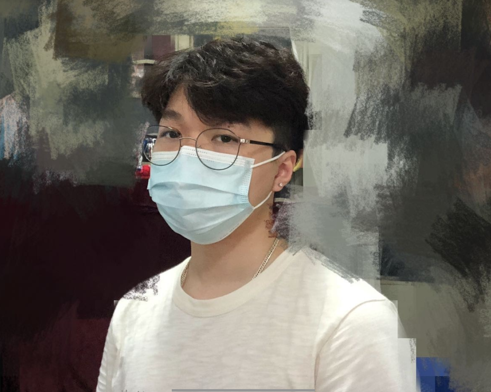

My name is Shaoguan Ye, and i have got a English name Logan as Shaoguan is not so friendly to pronounce. The student number of mine is s3658534 and obviously the school email is s3658534@rmit.student.edu.au. I came to Australia on 2012 December, the reason that I can remember so clearly is not only because it is my important day, but also back to 2012, there was a prediction that humanity was about to terminated on 25th December. I was feeling a bit stressed when the day has came, but eventually nothing happens, which leaves me not only relaxing but boring. Anyways, as I was born in GuangZhou, where Cantonese is originated, so I can speak both Mandarin and Cantonese since I was a child. And now, as I already lived in Australia for 8 years, I am feeling a bit familiar with English, but maybe not on oral. Also I always have interest in Japanese, as I often watch anime, so I can speak some common things in Japanese. Apparently, I am in the second year of Business information system, however I found myself having more passions and interest in IT instead, even though they are so familiar, but I still want to change to Bachelor of IT this year, hopefully everything works out successfully. About my hobby, it is actually related to one of the things that I am having passion to do----- building a robot model. When I was a kid, I really feel touched while watching the films or anime about robot. Therefore, I now always like to get some robot models that is in a scale of 1:100 or 1:144 to their original sizes to build.
